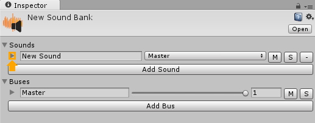
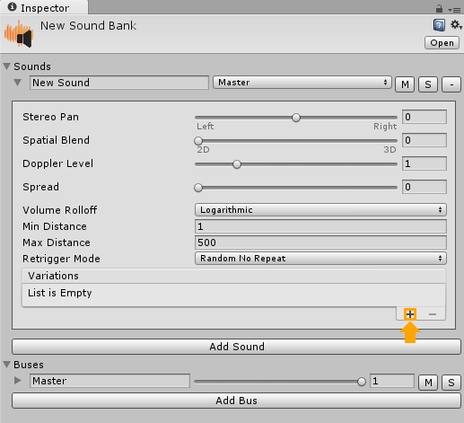
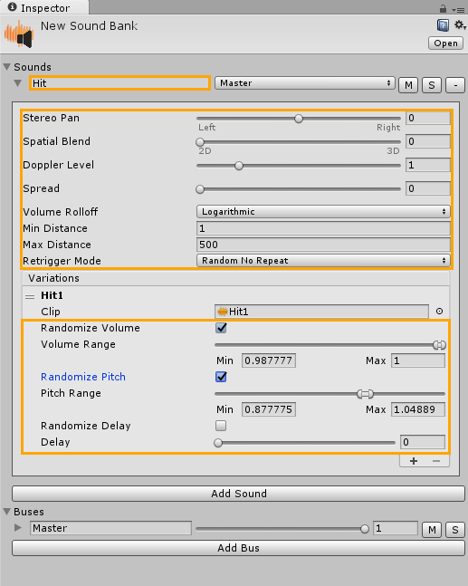
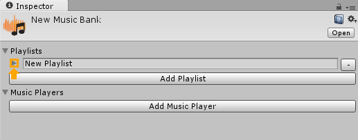
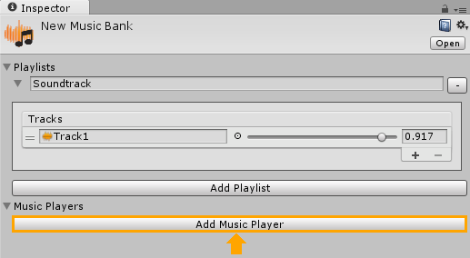
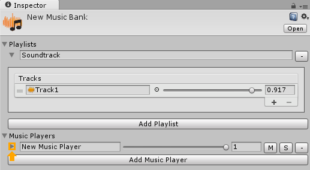
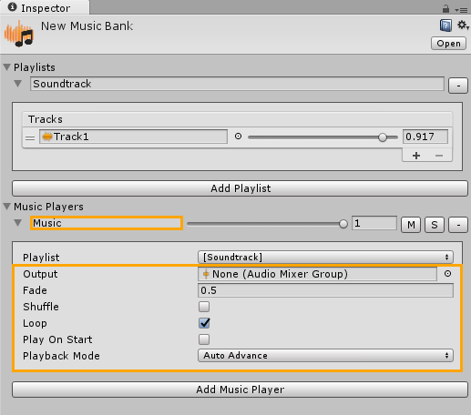

Quickstart
Create assets
Press the right mouse button on any folder to open the Assets menu.
- Choose "Create -> Stem -> Music Bank" to create new music bank.
- Choose "Create -> Stem -> Sound Bank" to create new sound bank.
Setup sound bank
1. Select a sound bank asset and add a new sound by pressing the "Add Sound" button in the inspector window.
2. Expand sound settings by clicking the arrow near the sound name.

3. Add the first variation to the sound by pressing the "+" button in the "Variations" list.

4. Assign an audio clip to the variation by dragging it into the "Clip" property.
5. Set sound name, adjust parameters and randomization settings.

Setup music bank
1. Select a music bank asset and add a new playlist by pressing the "Add Playlist" button in the inspector window.
2. Expand playlist settings by clicking the arrow near the playlist name.

3. Add the first track to the playlist by pressing the "+" button in the "Tracks" list.
4. Assign an audio clip to the track.
5. Set playlist name, adjust track volume.
6. Add a new music player by pressing the "Add Player" button in the inspector window.

7. Expand music player settings by clicking the arrow near the music player name.

8. Choose the playlist from the "Playlist" drop-down menu.

9. Set music player name, adjust parameters.

Play one-shot sounds
By sound ID in the script
Use Stem.SoundManager.Play to play one-shot sounds.
using UnityEngine;
public class PlayerHit : MonoBehaviour
{
[Stem.SoundID]
public int soundID = 0;
private void OnTriggerEnter(Collider collider)
{
if (collider.tag == "Enemy")
Stem.SoundManager.Play3D(soundID, transform.position);
}
}
By sound name in the script
Use Stem.SoundManager.Play to play one-shot sounds.
using UnityEngine;
public class PlayerHit : MonoBehaviour
{
public string soundName = "Hit";
private void OnTriggerEnter(Collider collider)
{
if (collider.tag == "Enemy")
Stem.SoundManager.Play3D(soundName, transform.position);
}
}
(Stem Pro) With AudioEvents component
Add new audio event, set event type to "On Trigger Enter", add a single condition and "Play Sound" action.
Start music playback
Via "Play On Start" option in the music bank
Check "Play On Start" option to automatically play current music player when the game starts.
By music player ID in the script
Use Stem.MusicManager.Play to start music playback during level startup.
using UnityEngine;
public class LevelStartup : MonoBehaviour
{
[Stem.MusicPlayerID]
public int musicPlayerID = 0;
private void Start()
{
Stem.MusicManager.Play(musicPlayerID);
}
}
By music player name in the script
Use Stem.MusicManager.Play to start music playback during level startup.
using UnityEngine;
public class LevelStartup : MonoBehaviour
{
public string musicPlayerName = "Music";
private void Start()
{
Stem.MusicManager.Play(musicPlayerName);
}
}